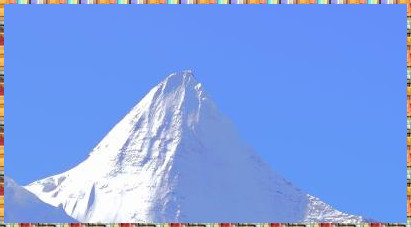

6. 给图片添加边框
如果您给图片的四周添加一个边框，可以参考下面的步骤操作。
原图没有边框，效果是这样：
雪山 四周无边框
加边框后的效果：
雪山 加边框之后
操作方法如下：
打开GIMP。
用鼠标拖动原图到GIMP工具箱上。
如果你的工具箱和下面截图不一样，可能需要调整一下工具箱分组功能；

把图像拖到GIMP工具箱上
工具箱上下都显示了黑色边框的时候，松开鼠标，即可在GIMP中打开该图片。
GIMP工具箱会自动检测：工具箱上下显示黑色边框表示已经检测到拖过来的图片；
点击菜单 选择→全部，选中整个图像。
全部选中后，图像四周会显示动态的黑白虚线；
选择→全部
点击菜单 编辑→勾画选区，
编辑→勾画选区
在对话框中选中“笔廓线”，再选择“纯色”，线宽数值要根据您的图片尺寸来定，如果不确认多少合适，可以先试一下20，不行再改。其它选项不用管，点击右下角的“笔廓”按钮。
添加默认边框后的效果
(边框的颜色和粗细可能不合适，我们先调整一下粗细)
按Ctrl+Z两次，撤销之前添加的边框，然后按上面第4步的方法：点击菜单 选择→全部，选中整个图像；再按第5步方法：点击菜单 编辑→勾画选区，把“线宽”从20改为4，然后点击右下角的“笔廓”按钮。
边框线宽改为4之后的效果
(边框宽度已经没问题了，接下来我们改一下边框的颜色)
(边框的颜色使用的是工具箱的前景色，如下图所示)
工具箱中的前景色和背景色
(上面截图底部左上大的黑色方块就是前景色，当前为黑色；我们用鼠标点击这个方块，会显示下面的窗口)
修改前景色
(上面截图中可以修改前景色：先点击最左侧大色块的右侧的纵向色条，选择一种颜色，选择后最左侧的大色块会相应变化；之后在最左侧的大色块中点击，选择颜色，这个颜色就变成前景色。然后点击右下角的“确定”按钮)
假设上一步选择了红色，工具箱中应该是这样的：
前景色已经改为红色
对比第10步的截图，前景色已经从黑色变为红色；
重新画边框：按第4步方法点击菜单 选择→全部，选中整个图像；再按第5步方法：点击菜单 编辑→勾画选区，“线宽”设置为4，然后点击右下角的“笔廓”按钮。结果如下图：
修改前景色为红色再加边框的效果
进阶 ⇒ 边框从纯色改为图案
您还可以添加类似下面这样的边框：(点击可查看原图)
{kind=link}
{kind=link}
{kind=link}
上面三个边框，是在上面第6步操作时，把“纯色”换成了“图案”，然后从图案对话框中选择一个图案即可，其它操作完全相同。下面介绍一下选择图案的方法：
点击菜单 窗口→可停靠对话框→图案。(打开图案对话框)
窗口→可停靠对话框→图案
对话框中显示很多图案，点击一个合适的图案即可。
从上面第一步开始操作，仅第6步把“纯色”换成“图案”，其它所有操作完全相同，就能实现图案边框。
提示
边框从纯色改为图案后，最好在第6步中把“线宽”改为8，这样效果相对比较好。